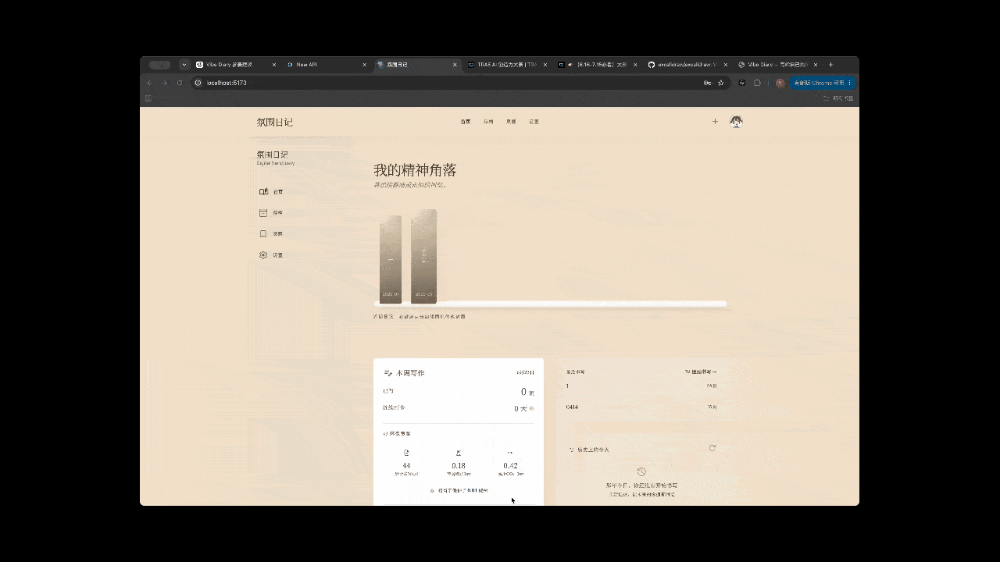

多本日记本管理
创建多本日记本，按主题或时间分类，如「午夜书写」「2024 氛围日记」。
Vibe Diary 的两个核心亮点：丝滑翻页与灵感卡片散落。

柔和阴影 · 真实翻页弧度 · 沉浸式阅读

每一张卡片都是某一刻的心情
为什么我想做 Vibe Diary？
很多人想写日记，但普通笔记软件太工具化，纸质日记又不方便长期保存和回顾。 更重要的是，日记往往是很私密的内容，很多用户不希望默认把自己的文字交给 AI 分析。
因此 Vibe Diary 的想法是：
先做好记录体验，先尊重隐私，再把智能能力变成可选项。
Vibe Diary 想陪伴的人，和他们遇到的麻烦。
需要氛围感和仪式感，而不是冷冰冰的输入框
想要翻页感、书架感，但又要能搜索和长期保存
每天经历很多，需要一个地方沉淀思绪
希望 AI 是可选项，而不是默认读取所有内容
没有氛围感，写日记像在填表单
无法搜索、无法长期保存、容易丢失
很多 AI 默认读取内容，用户不敢写真心话
过去的情绪和记忆容易被遗忘，很少回看
基于 Vibe Diary 源项目真实已实现的能力，不是 PPT，是能跑的代码。
创建多本日记本，按主题或时间分类，如「午夜书写」「2024 氛围日记」。
日记本以拟物书架形式展示，点击即可打开，营造个人精神角落。
基于 StPageFlip 实现真实翻页效果，支持鼠标拖拽、点击翻页，沉浸感强。
双击页面进入编辑模式，支持长文本编辑，自动保存到本地数据库。
收藏名言、图片、竖排卡片等 5 种形式，3D 散落动画展示，支持搜索筛选。
本周写作页数、连续打卡天数、累计书写页数、环保贡献（节省纸张/减少 CO₂）。
首页随机展示一条过往日记片段，触发回忆与反思。
查看去年、前年的今天写了什么，让过去的自己与现在对话。
三种主题：极简素白、午夜书房、羊皮故卷，可调字体大小和行高。
Vibe Diary 坚守的四个底线。
日记默认属于用户自己，不对外公开，不默认上传给 AI。
先把写日记的体验做好，翻页、书架、氛围感，比 AI 更重要。
未来如果加入 AI，由用户主动开启，而不是默认读取所有日记。
AI 只做复盘提示和整理建议，不做心理诊断，不替代专业咨询。
Vibe Diary 的技术栈与数据流。
这些都是「计划中」，不是「已完成」。PLANNED
"Vibe Diary 不是让 AI 替你理解自己，
而是先给你一个愿意写下自己的地方。"
~ Vibe Diary · 一个个人开发者的参赛作品 ~